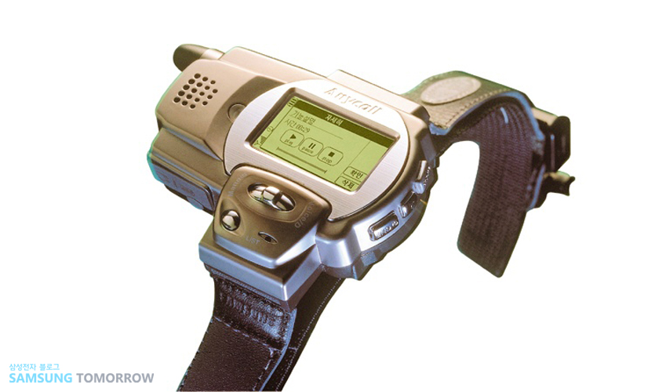
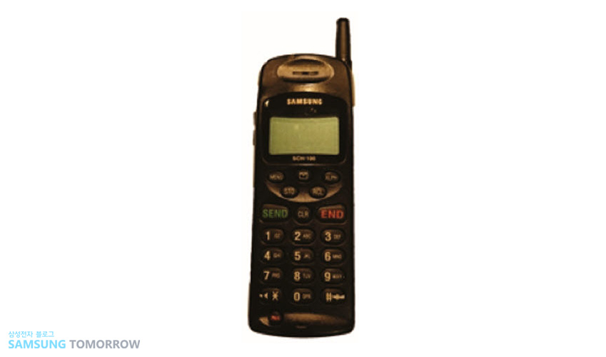

Смарт часовник
Да, някои варианти на Gear часовници ви позволяват да изпращате съобщения или дори да осъществявате разговор, без да се свързвате с телефона си, но пазарът на часовници-телефони всъщност започва много по-рано, през 1999 г. Samsung е първият пионер и един от единствените оттогава, който създава часовник, който има функциите и на телефон - наречен е Samsung SPH-WP10.
Този уникален часовник може не само да показва времето, но и позволява да се възпроизведе телефонен разговор до 90 минути. След това батерията ще се изтощи и ще трябва да го заредите. Екранът е бил от подсветката на монохромен LCD дисплей и е имал (физически) бутони за навигация из менюто. Можел е да набира контакти сао чрез гласова команда, което е било лукс за времето си.
Не е изненадващо, че изглеждащото почти като Pip-Boy устройство не постига търговски успех, но е интересно да се знае, че дните на смарт часовниците на Samsung всъщност започват много преди тези на семейство Gear.
|  |
CDMA телефон Samsung SCH-100 е пуснат през 1996 г., което го прави първият телефон, който използва CDMA технологията. Да бъдеш първият, използвал този стандарт, който мнозина виждат като ограничаващ и незначителен в сравнение с GSM, вероятно не е много за хвалене сега, но в миналото далеч не е било така. По онова време CDMA е била нова технология и преди бързите 4G / LTE технологии всъщност е имал някои реални предимства пред GSM.
Това може да не е така вече, но Samsung все още заслужава похвала за желанието си да изпробва нов стандарт.
|
 |